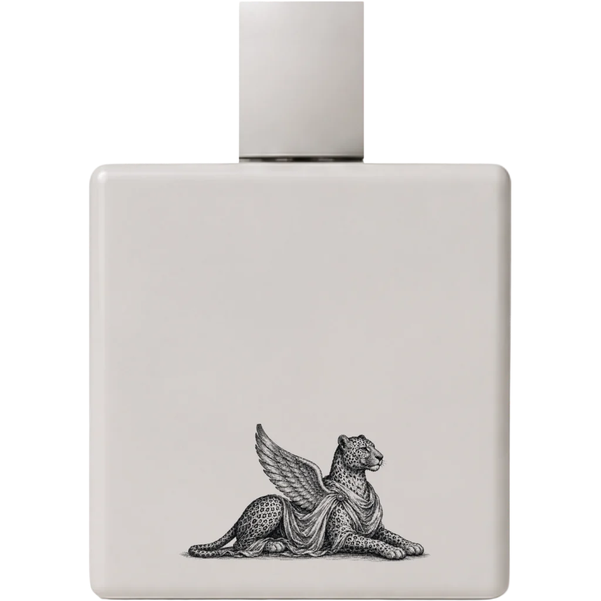

Craftsmanship
Oil-rich parfums composed in Copenhagen — from raw materials to the finished object on your shelf.

Composition
EILLON works as an oil-rich parfum house. Concentrations are built for longevity and a close, skin-held trail — not loud projection. Accords are layered slowly: fruit and mineral top notes, floral hearts, and musk-and-stone bases that settle over hours.
Each chapter begins as a memory of place. Beles draws on sun-warmed prickly pear and cactus water. Asmara on rain and espresso over stone. Massawa on Red Sea citrus and salt skin. Formulas are refined in the studio before any bottle is offered for sale.
Ingredients & sourcing
Raw materials are selected for clarity and wear on skin — natural and synthetic molecules combined where each serves the accord. Citrus, resins, musks, and floral absolutes are chosen for stability in an oil-rich base and for how they evolve over an eight-hour wear.
| Material family | Examples in EILLON | Source type |
|---|---|---|
| Citrus & fruit | Prickly pear accord, bergamot, orange, pear skin | Natural isolates & safe synthetics |
| Florals | Hibiscus, jasmine, cactus bloom | Absolutes & nature-identical molecules |
| Resins & woods | Frankincense, myrrh, sandalwood, labdanum | Ethically sourced naturals where available |
| Musk & amber | White musk, soft amber, mineral air | IFRA-compliant synthetics & ambroxan |
All formulas comply with IFRA standards. As chapters move toward release, supplier notes and batch traceability are published in the journal so customers can follow how each accord is built.
Manufacturing
- Formula lock — accord approved in studio, batch size set.
- Compounding — small-batch production with resting time before fill.
- Hand finish — fill, inspect, and wrap in archival cream paper in Copenhagen.
- Release — restock list first, then public boutique window.
Sustainability commitments
- Small-batch production to limit waste and overstock.
- Recyclable glass flacons designed for long keep, not single-use novelty.
- Minimal outer packaging — archival wrap rather than heavy gift boxes by default.
- Discovery samples offered where possible so customers can wear before committing to a full bottle.
- Supplier review for key naturals — prioritising traceable resins and florals as volumes grow.
- No animal-derived musks; all formulas are vegan and IFRA-compliant.
Beles · Fico d'India → · Fragrance care guide → · The bottle as architecture →